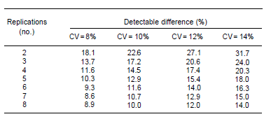

2 จำนวนซ้ำ
จำนวนซ้ำ (Replication) ไม่ได้มีไว้แค่เพื่อให้ครบตามสูตรสถิติ แต่มีไว้เพื่อเพิ่มพลังในการทดสอบ (Statistical Power) ยิ่งทำซ้ำมาก ความคลาดเคลื่อนยิ่งลดลง และโอกาสในการตรวจพบผลสำเร็จของงานวิจัยยิ่งสูงขึ้น อย่างไรก็ตาม นักวิจัยต้องรักษาสมดุลระหว่าง ‘ความแม่นยำที่ต้องการ’ กับ ‘งบประมาณที่มี’ โดยยึดหลัก Error df ไม่น้อยกว่า 12 เป็นเกณฑ์เริ่มต้น
จำนวนครั้งที่ชุดทรีตเมนต์ทั้งหมดถูกทำซ้ำในการทดลองเรียกว่า จำนวนซ้ำ (Number of replications) การสุ่มตัวอย่างหลายจุด (quadrats) จากพื้นที่ขนาดใหญ่ที่ปลูกพันธุ์เดียว หรือการสังเกตหลายครั้งจากแปลงเดียว ไม่ถือเป็นจำนวนซ้ำที่แท้จริง สิ่งเหล่านี้คือตัวอย่างย่อย (subsamples) และความแปรปรวนของมันคือความคลาดเคลื่อนจากการสุ่มตัวอย่าง (sampling error) ไม่ใช่ความคลาดเคลื่อนจากการทดลอง (experimental error)
การใช้ค่าความแปรปรวนจาก subsample มาวิเคราะห์ จะทำให้ค่า F-test สูงเกินจริง และนำไปสู่การสรุปผลที่ผิดพลาด (Type I Error)
2.1 ผลของจำนวนซ้ำ (Effect of replication)
การทำซ้ำจำเป็นต้องมีเพื่อให้สามารถวัดความคลาดเคลื่อนจากการทดลองได้ นอกจากนี้ยังเป็นวิธีที่ง่ายที่สุดในการเพิ่มความแม่นยำ แต่เมื่อถึงจุดหนึ่ง การเพิ่มจำนวนซ้ำจะให้ความแม่นยำเพิ่มขึ้นเพียงเล็กน้อยจนไม่คุ้มกับค่าใช้จ่ายที่เพิ่มขึ้น
2.2 การกำหนดจำนวนซ้ำ
ขึ้นอยู่กับขนาดของความคลาดเคลื่อนจากการทดลองที่คาดว่าจะเกิดขึ้นและความแม่นยำที่ต้องการ โดยทั่วไปมักใช้ค่าสัมประสิทธิ์ความแปรปรวน (CV) ของผลผลิตเป็นเกณฑ์ ในแปลงทดลองของ IRRI ค่า CV เฉลี่ยของผลผลิตจะอยู่ที่ประมาณ 8% สำหรับการทดสอบพันธุ์ และ 10% สำหรับการทดลองอื่น ๆ แปลงทดลองคือพื้นที่ที่เราใช้ในการทดลองวิธีการต่างๆ อย่างเป็นระบบ
ดังนั้น ขนาดของแปลงจึงไม่ได้หมายถึงแค่พื้นที่ที่เราจะเก็บเกี่ยวผลผลิตเท่านั้น แต่รวมถึงพื้นที่ทั้งหมดที่ได้รับวิธีการทดลองนั้นๆ ด้วย รูปร่างของแปลงก็คืออัตราส่วนระหว่างความยาวและความกว้าง ส่วนการวางแนวของแปลงคือการเลือกทิศทางของความยาวแปลง ซึ่งแปลงรูปสี่เหลี่ยมจัตุรัสจะไม่สามารถกำหนดทิศทางการวางแนวได้
2.2.1 “กฎของ Error df”
หลักการ: เพื่อให้การทดสอบสถิติมีความเชื่อถือได้ ค่า Degrees of Freedom ของ Error (df error) ควรมีค่าอย่างน้อย 10 ถึง 12
สูตรสำหรับ RCBD: \(df = (t-1)(r-1)\) (เมื่อ \(t\) = จำนวนกรรมวิธี, \(r\) = จำนวนซ้ำ)
ตัวอย่าง: หากคุณทดลองข้าว 4 สายพันธุ์ (\(t=4\))
ถ้าใช้ 3 ซ้ำ: \(df = (4-1)(3-1) = 6\) (น้อยเกินไป ผลสถิติจะไม่เสถียร)
ถ้าใช้ 5 ซ้ำ: \(df = (4-1)(5-1) = 12\) (เหมาะสมตามเกณฑ์)
ดังนั้น ถ้าจำนวนกรรมวิธีน้อย คุณยิ่งต้องเพิ่มจำนวนซ้ำให้มากขึ้น
2.2.1.1 Standard Error of Mean (SE) กับ จำนวนซ้ำ
ค่าความคลาดเคลื่อนมาตรฐานของค่าเฉลี่ยคำนวณจากสูตร: \(SE = \frac{CV}{\sqrt{r}}\)
จุดเปลี่ยน (Diminishing Returns): เมื่อเราเพิ่มจำนวนซ้ำจาก 2 เป็น 4 ค่า SE จะลดลงอย่างรวดเร็ว (เพราะหารด้วย \(\sqrt{2}\) ไปเป็น \(\sqrt{4}\)) แต่ถ้าเพิ่มจาก 8 เป็น 10 ความแม่นยำที่ได้เพิ่มขึ้นจะน้อยมากจนไม่คุ้มค่าแรงงาน
ข้อแนะนำ: สำหรับงานทดลองข้าวทั่วไป 3-4 ซ้ำ คือจุดที่คุ้มค่าที่สุด (Optimal point)

2.2.1.2 การตรวจหาความแตกต่าง (Sensitivity/Detection Power)
“ต้องใช้กี่ซ้ำ ถึงจะเห็นว่าพันธุ์ A ดีกว่าพันธุ์ B จริงๆ”
ถ้าดินมีความแปรปรวนสูง (CV 15%) และคุณต้องการตรวจหาความแตกต่างที่ระดับ 10% ของค่าเฉลี่ย คุณอาจต้องใช้ถึง 10-12 ซ้ำ ซึ่งในทางปฏิบัติทำไม่ได้
ทางเลือก: หากเพิ่มซ้ำไม่ได้ ต้องกลับไปคุมความสม่ำเสมอของดินในแปลง หรือปรับปรุงเทคนิคการเก็บข้อมูลเพื่อให้ค่า CV ลดลงแทน

2.2.2 ค่าสัมประสิทธิ์ของความแปรปรวน
ค่าสัมประสิทธิ์ของความแปรปรวน (Coefficient of Variation: C.V.) เป็นค่าทางสถิติที่ใช้เป็นดัชนีบ่งชี้ถึงคุณภาพของการทดลองและความน่าเชื่อถือของผลการทดลองนั้นๆ โดยเป็นการวัดความแปรปรวนของงานทดลองในเชิงสัมพัทธ์เพื่อเปรียบเทียบกับค่าเฉลี่ย
เกณฑ์ความน่าเชื่อถือของค่า C.V. มีรายละเอียดดังนี้
1. เกณฑ์มาตรฐานทั่วไปตามประเภทงานทดลอง
งานทดลองเปรียบเทียบพันธุ์ข้าว: ในสถานีทดลองมักมีค่าเฉลี่ยอยู่ที่ประมาณ 8% หรืออยู่ในช่วง 10% ± 3
งานทดลองทางปฐพีวิทยาหรือพืชไร่อื่นๆ: มักมีค่าเฉลี่ยอยู่ที่ประมาณ 10%
งานทดลองด้านเขตกรรม (Cultural practices): ค่ามาตรฐานที่น่าเชื่อถือจะอยู่ที่ประมาณ 12% ± 6
2. เกณฑ์ตามสภาพแวดล้อมและพืชที่ศึกษา
ในนาเกษตรกร: ความน่าเชื่อถือจะลดลงตามสภาพแวดล้อมที่ควบคุมยาก ค่า C.V. ที่ยอมรับได้จะสูงขึ้นเป็นประมาณ 13% ± 5 สำหรับงานเปรียบเทียบพันธุ์
พืชต่างชนิดกัน: เช่น งานทดลองถั่วเหลือง ค่า C.V. ของผลผลิตอาจสูงถึง 19% ± 6 แต่สำหรับลักษณะที่แปรปรวนน้อยอย่างน้ำหนัก 100 เมล็ด ค่า C.V. ควรจะต่ำเพียง 6% ± 2 ถึงจะน่าเชื่อถือ
งานด้านแมลงศัตรูพืช: มักมีความแปรปรวนสูงกว่างานด้านพันธุ์หรือปุ๋ย โดยค่า C.V. อาจสูงได้ถึง 16% - 29% ขึ้นอยู่กับชนิดของแมลง
ปัจจัยที่ส่งผลต่อค่า C.V.
ความไม่สม่ำเสมอของดิน (Soil Heterogeneity): ดินที่มีความแตกต่างกันมากในพื้นที่เดียวกันจะทำให้ค่า C.V. สูงขึ้น
เทคนิคปฏิบัติ: การใช้เทคนิคการวางแผนทดลองที่ไม่เหมาะสม หรือขนาดแปลงย่อยที่เล็กเกินไป
ความคลาดเคลื่อนจากการทดลอง (Experimental Error): หากการจัดการในแต่ละซ้ำไม่สม่ำเสมอ จะส่งผลโดยตรงต่อค่า C.V.